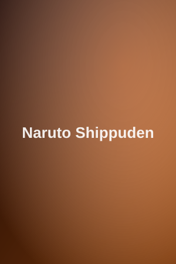

Naruto Uzumaki, a falujából kiközösített ninja, aki arról álmodik, hogy Hokage lesz és elnyeri mindenki elismerését. Két és fél évnyi kemény edzés után Naruto visszatér Konoha falujába, és új kihívások elé néz barátaival, miközben az Akatsuki fenyegetése egyre nagyobbá válik.